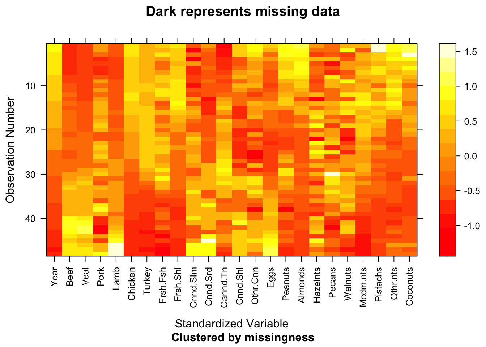
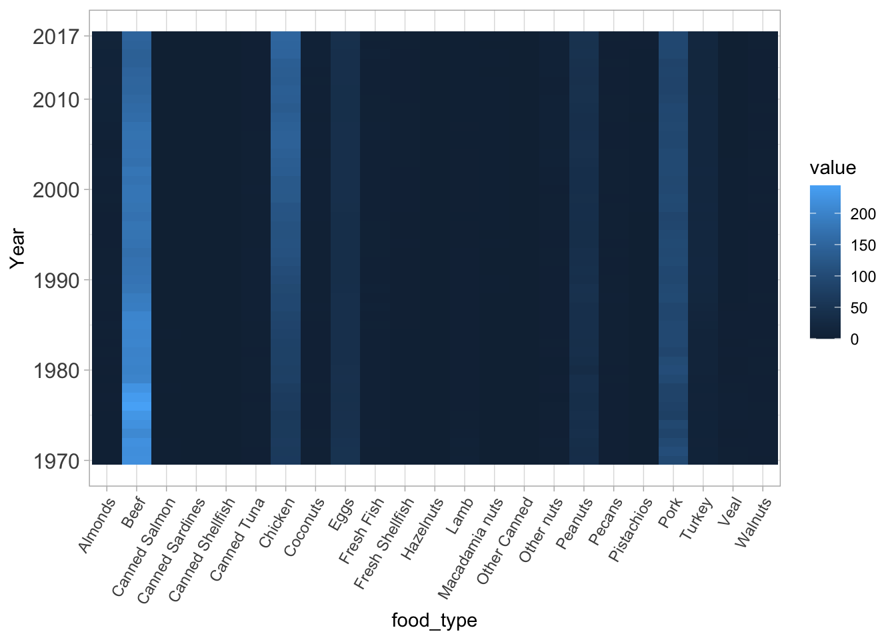
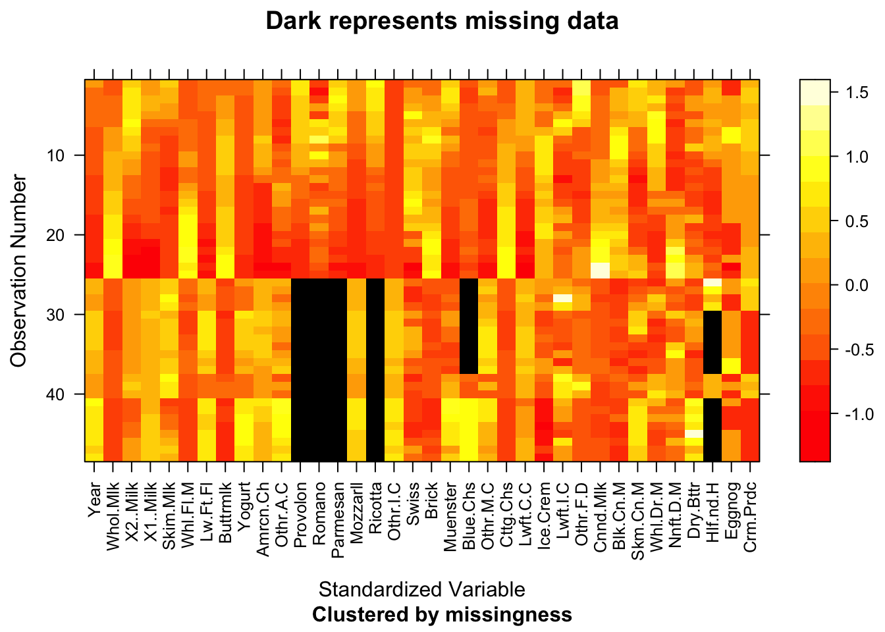
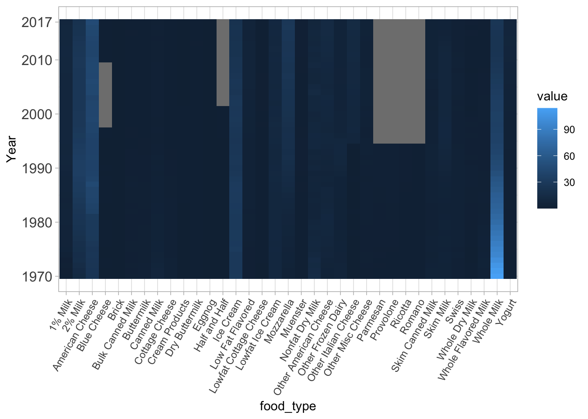
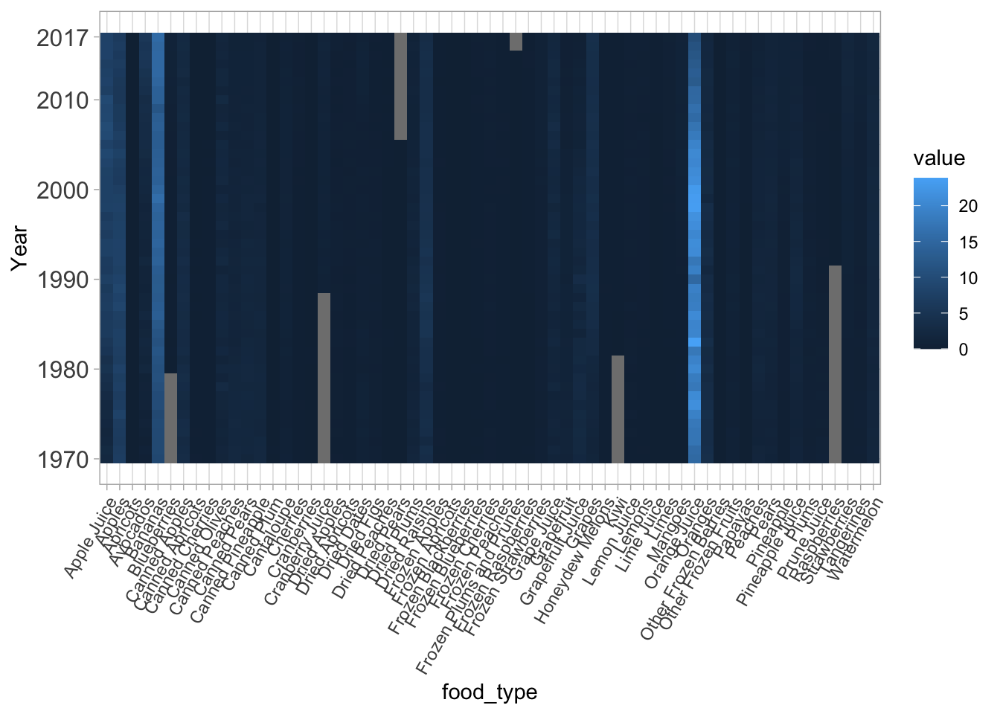
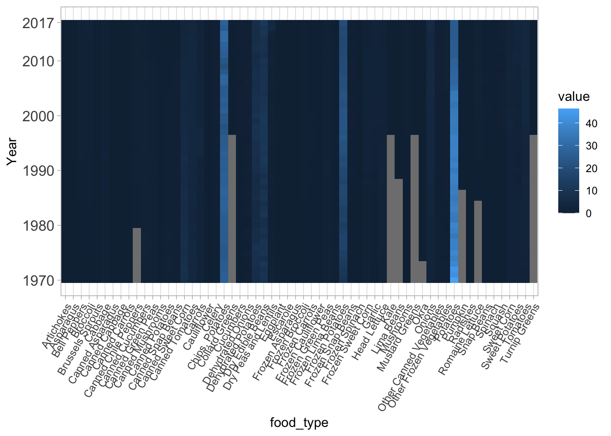
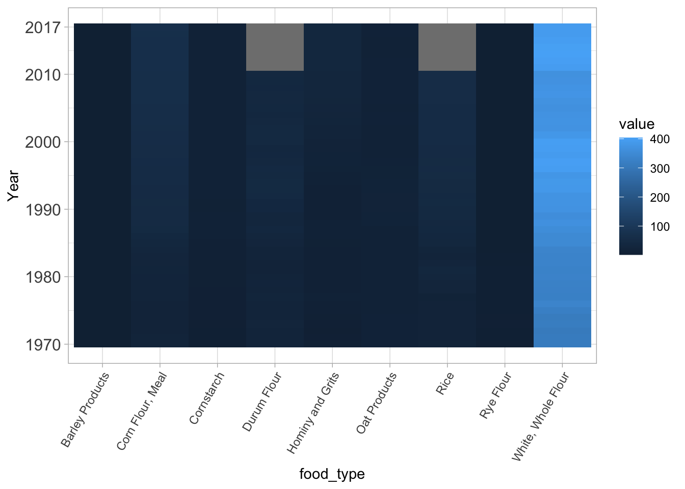
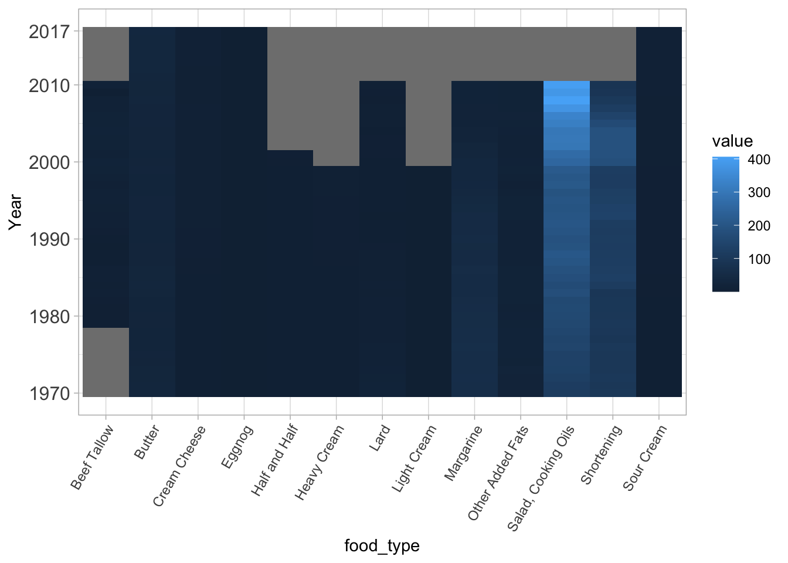
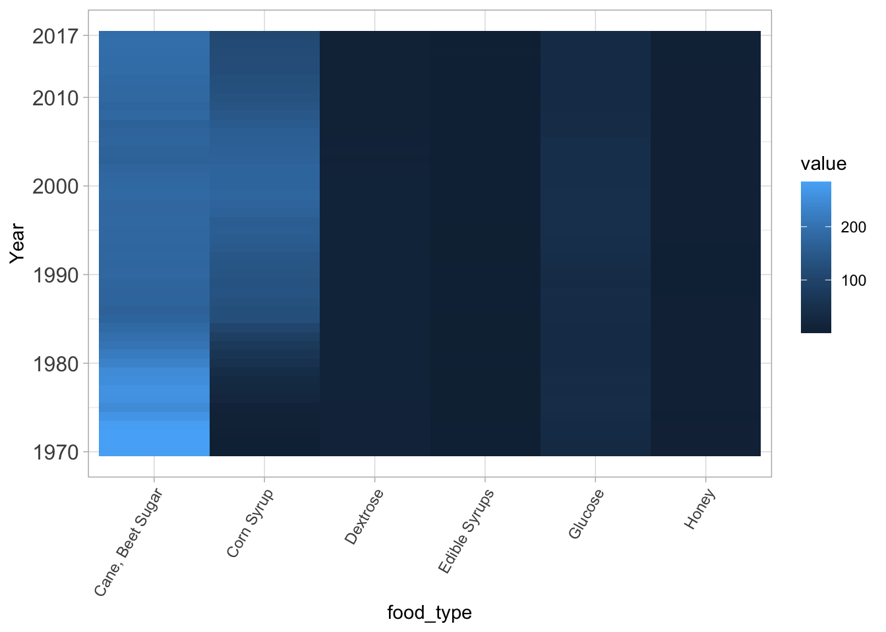

Chapter 4 Missing values
The digestive cancer and food data are small enough that we can inspect the raw data and get a sense of what’s missing. In doing so, we’ve observed that no data is missing from the digestive cancer incidence and mortality tables. Some of the food spreadsheets, which go all the way back to 1970, are missing data. Each of those sheets are investigated further, depending on whether they have missing data.
With all of the plots available below, there are two distinct patterns that cover most of the missing data. Some columns are missing from 1970 up to some year where they’re no longer missing. Other columns are available in 1970 but stop at some year and never start again. These data likely come from some census- or survey-based method which isn’t exactly the same every year. The survey has some lifecycle and, when updated, the available columns change.
Looking at the specific examples of missing data, some don’t seem likely to be “new” or “expired” food categories (like raspberry and provolone cheese). Others could be the decomposition of a field or the addition of foods to the American diet. More research would be necessary; the data themselves aren’t enough to tell.
4.1 Where is Data Missing?
Each table in this section looks and counts missing data. We know that any missing datum shows up in our data as NA. Reviewing these results, we can see that the sugar and meat-eggs-nuts sheets have no missing data, while the rest do.
4.1.1 Missing Meat, Eggs, Nuts
| x | |
|---|---|
| X1 | 0 |
| Year | 0 |
| Beef | 0 |
| Veal | 0 |
| Pork | 0 |
| Lamb | 0 |
| Chicken | 0 |
| Turkey | 0 |
| Fresh Fish | 0 |
| Fresh Shellfish | 0 |
| Canned Salmon | 0 |
| Canned Sardines | 0 |
| Canned Tuna | 0 |
| Canned Shellfish | 0 |
| Other Canned | 0 |
| Eggs | 0 |
| Peanuts | 0 |
| Almonds | 0 |
| Hazelnuts | 0 |
| Pecans | 0 |
| Walnuts | 0 |
| Macadamia nuts | 0 |
| Pistachios | 0 |
| Other nuts | 0 |
| Coconuts | 0 |
4.1.2 Missing Dairy
| x | |
|---|---|
| Provolone | 23 |
| Romano | 23 |
| Parmesan | 23 |
| Ricotta | 23 |
| Half and Half | 16 |
| Blue Cheese | 12 |
| X1 | 0 |
| Year | 0 |
| Whole Milk | 0 |
| 2% Milk | 0 |
| 1% Milk | 0 |
| Skim Milk | 0 |
| Whole Flavored Milk | 0 |
| Low Fat Flavored | 0 |
| Buttermilk | 0 |
| Yogurt | 0 |
| American Cheese | 0 |
| Other American Cheese | 0 |
| Mozzarella | 0 |
| Other Italian Cheese | 0 |
| Swiss | 0 |
| Brick | 0 |
| Muenster | 0 |
| Other Misc Cheese | 0 |
| Cottage Cheese | 0 |
| Lowfat Cottage Cheese | 0 |
| Ice Cream | 0 |
| Lowfat Ice Cream | 0 |
| Other Frozen Dairy | 0 |
| Canned Milk | 0 |
| Bulk Canned Milk | 0 |
| Skim Canned Milk | 0 |
| Whole Dry Milk | 0 |
| Nonfat Dry Milk | 0 |
| Dry Buttermilk | 0 |
| Eggnog | 0 |
| Cream Products | 0 |
4.1.3 Missing Fruit
| x | |
|---|---|
| Raspberries | 22 |
| Cranberry Juice | 19 |
| Kiwi | 12 |
| Dried Pears | 12 |
| Blueberries | 10 |
| Frozen Plums and Prunes | 2 |
| X1 | 0 |
| Year | 0 |
| Oranges | 0 |
| Tangerines | 0 |
| Grapefruit | 0 |
| Lemons | 0 |
| Limes | 0 |
| Apples | 0 |
| Apricots | 0 |
| Avocados | 0 |
| Bananas | 0 |
| Cantaloupe | 0 |
| Cherries | 0 |
| Cranberries | 0 |
| Grapes | 0 |
| Honeydew Melons | 0 |
| Mangoes | 0 |
| Peaches | 0 |
| Pears | 0 |
| Pineapple | 0 |
| Papayas | 0 |
| Plums | 0 |
| Strawberries | 0 |
| Watermelon | 0 |
| Canned Apples | 0 |
| Canned Apricots | 0 |
| Canned Cherries | 0 |
| Canned Olives | 0 |
| Canned Peaches | 0 |
| Canned Pears | 0 |
| Canned Pineapple | 0 |
| Canned Plum | 0 |
| Frozen Blackberries | 0 |
| Frozen Blueberries | 0 |
| Frozen Raspberries | 0 |
| Frozen Strawberries | 0 |
| Other Frozen Berries | 0 |
| Frozen Apples | 0 |
| Frozen Apricots | 0 |
| Frozen Cherries | 0 |
| Frozen Peaches | 0 |
| Other Frozen Fruits | 0 |
| Dried Apples | 0 |
| Dried Apricots | 0 |
| Dried Dates | 0 |
| Dried Figs | 0 |
| Dried Peaches | 0 |
| Dried Plums | 0 |
| Dried Raisins | 0 |
| Orange Juice | 0 |
| Grapefruit Juice | 0 |
| Lemon Juice | 0 |
| Lime Juice | 0 |
| Apple Juice | 0 |
| Grape Juice | 0 |
| Pineapple Juice | 0 |
| Prune Juice | 0 |
4.1.4 Missing Vegetables
| x | |
|---|---|
| Collard Greens | 27 |
| Kale | 27 |
| Mustard Greens | 27 |
| Turnip Greens | 27 |
| Lima Beans | 19 |
| Pumpkin | 17 |
| Romaine Lettuce | 15 |
| Canned Chile Peppers | 10 |
| Okra | 4 |
| X1 | 0 |
| Year | 0 |
| Artichokes | 0 |
| Asparagus | 0 |
| Bell Peppers | 0 |
| Broccoli | 0 |
| Brussels Sprouts | 0 |
| Cabbage | 0 |
| Carrots | 0 |
| Cauliflower | 0 |
| Celery | 0 |
| Sweet Corn | 0 |
| Cucumbers | 0 |
| Eggplant | 0 |
| Escarole | 0 |
| Garlic | 0 |
| Head Lettuce | 0 |
| Mushrooms | 0 |
| Onions | 0 |
| Potatoes | 0 |
| Radishes | 0 |
| Snap Beans | 0 |
| Spinach | 0 |
| Squash | 0 |
| Sweet Potatoes | 0 |
| Tomatoes | 0 |
| Canned Asparagus | 0 |
| Canned Snap Beans | 0 |
| Canned Cabbage | 0 |
| Canned Carrots | 0 |
| Canned Sweet Corn | 0 |
| Canned Cucumbers | 0 |
| Canned Green Peas | 0 |
| Canned Mushrooms | 0 |
| Canned Potatoes | 0 |
| Canned Tomatoes | 0 |
| Other Canned Vegetables | 0 |
| Frozen Asparagus | 0 |
| Frozen Snap Beans | 0 |
| Frozen Broccoli | 0 |
| Frozen Carrots | 0 |
| Frozen Cauliflower | 0 |
| Frozen Sweet Corn | 0 |
| Frozen Green Peas | 0 |
| Frozen Lima Beans | 0 |
| Frozen Potatoes | 0 |
| Frozen Spinach | 0 |
| Other Frozen Vegetables | 0 |
| Dehydrated Onions | 0 |
| Dehydrated Potatoes | 0 |
| Chips, Potatoes | 0 |
| Dry Edible Beans | 0 |
| Dry Peas and Lentils | 0 |
4.1.5 Missing Grains
| x | |
|---|---|
| Durum Flour | 7 |
| Rice | 7 |
| X1 | 0 |
| Year | 0 |
| White, Whole Flour | 0 |
| Rye Flour | 0 |
| Corn Flour, Meal | 0 |
| Hominy and Grits | 0 |
| Cornstarch | 0 |
| Oat Products | 0 |
| Barley Products | 0 |
4.1.6 Missing Fats
| x | |
|---|---|
| Light Cream | 18 |
| Heavy Cream | 18 |
| Beef Tallow | 16 |
| Half and Half | 16 |
| Margarine | 7 |
| Lard | 7 |
| Shortening | 7 |
| Salad, Cooking Oils | 7 |
| Other Added Fats | 7 |
| X1 | 0 |
| Year | 0 |
| Butter | 0 |
| Sour Cream | 0 |
| Cream Cheese | 0 |
| Eggnog | 0 |
4.1.7 Missing Sugars
| x | |
|---|---|
| X1 | 0 |
| Year | 0 |
| Cane, Beet Sugar | 0 |
| Corn Syrup | 0 |
| Glucose | 0 |
| Dextrose | 0 |
| Edible Syrups | 0 |
| Honey | 0 |
4.2 Meat, Eggs, Nuts

4.3 Dairy

4.4 Fruits

4.5 Vegetables

4.6 Grains

4.7 Fats

4.8 Sugars
